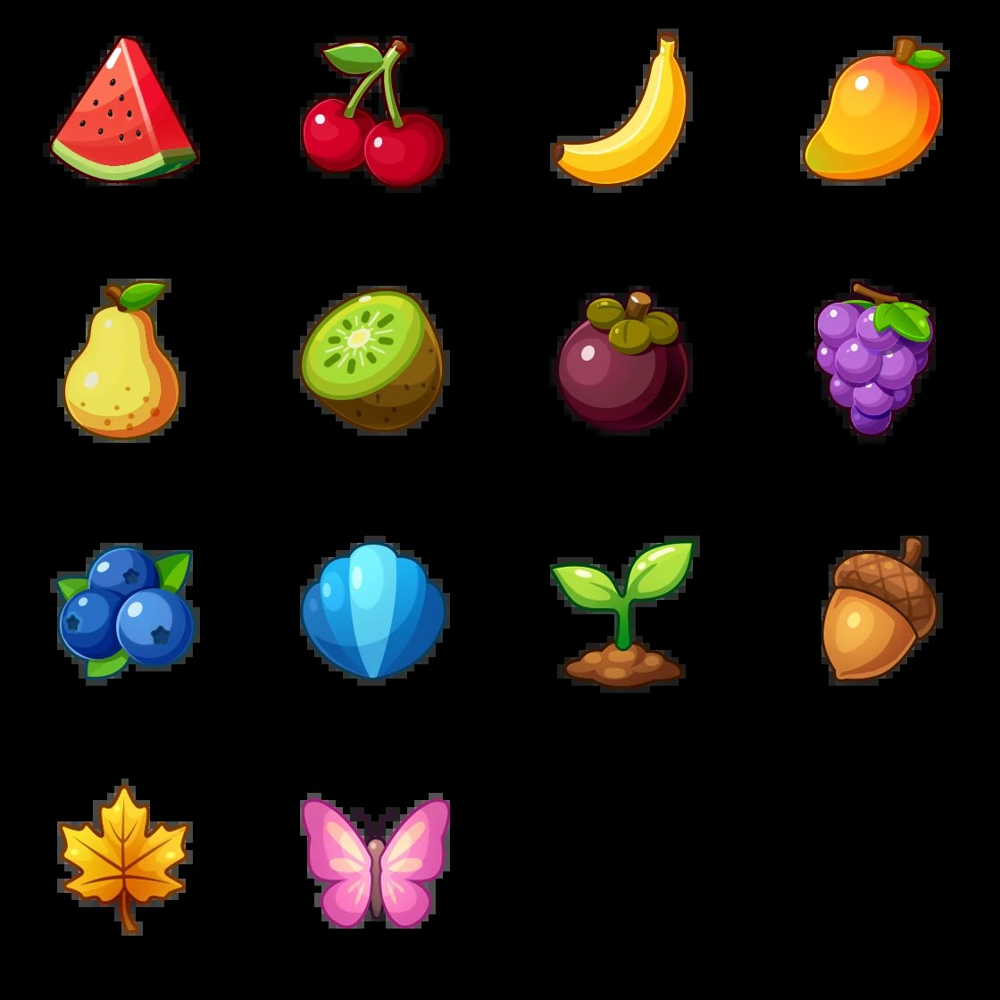
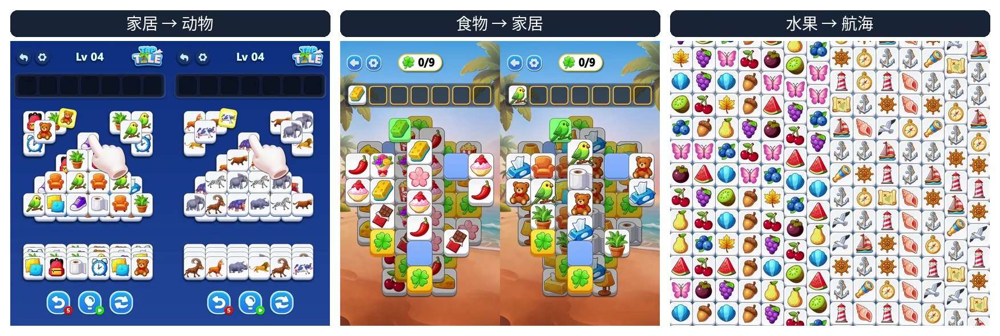
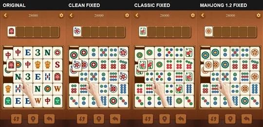
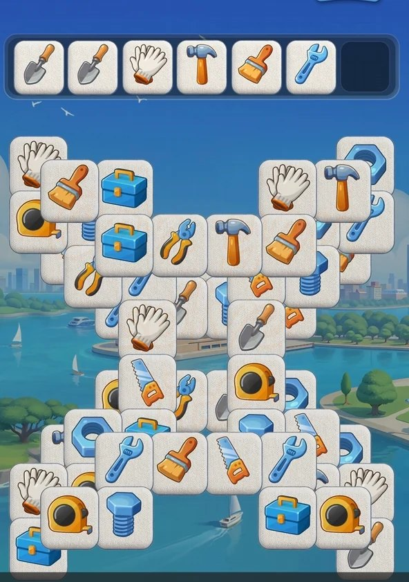
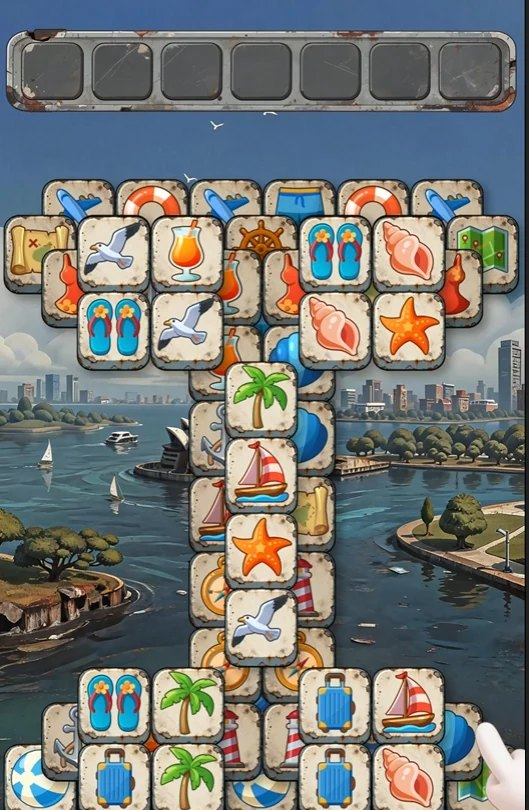
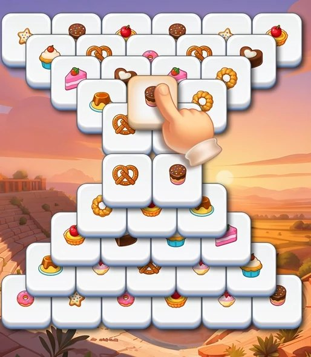
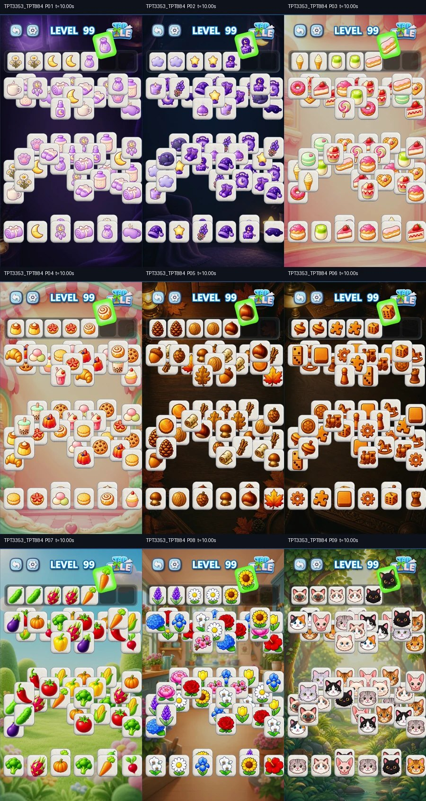
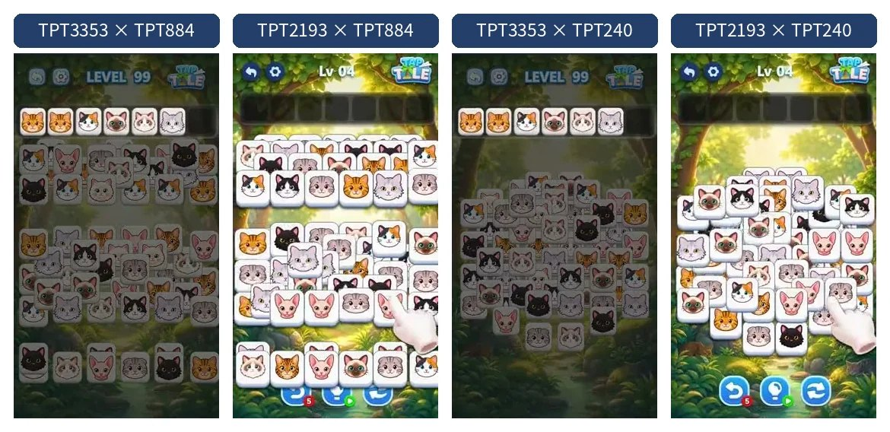
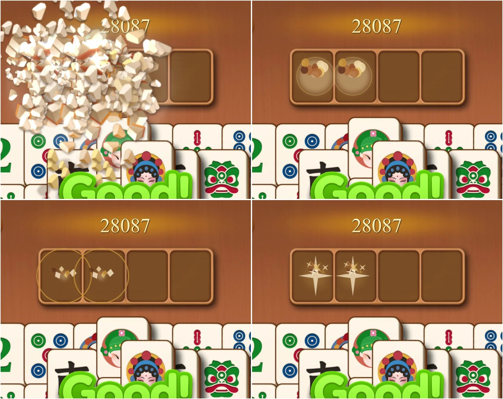
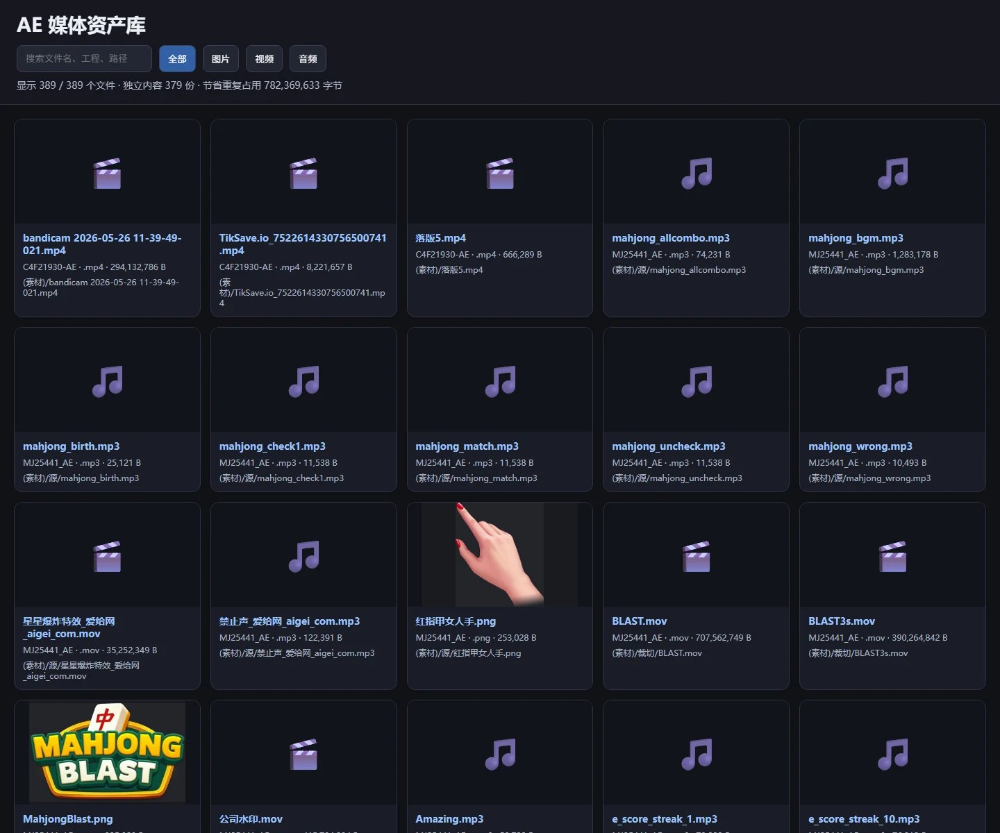

ae-blender-skill · After Effects · Blender
消除游戏广告素材操作
对设计源文件做二次创作，而不是重绘成片。牌面、堆叠、特效、音效可以分开改；点击、匹配、消除和 UI 时间线留在源工程里。 当前只在 Codex 5.6 SOL、推理深度 extra-high 下验证过。
After Effects · 01
换牌面
在 AEP 副本里定位真实牌面或材质，换成新图案后再由 AE 渲染。牌体、阴影、堆叠、点击顺序、匹配、消除、UI 和音轨不动。
目标水果牌面

家具 → 水果，同帧对比

补充验证：家居 → 动物、食物 → 家居、水果 → 航海。历史批次 11 个源 AEP × 12 组牌面。
麻将四版牌面

Mahjong 1.2 换牌版
After Effects · 02
换堆叠
参考图只定外形。Agent 在 AEP 副本里重排真实牌层，继续复用源工程的点击、匹配、消除和 UI。 这一条已经收成 Skill 包： 成片与八步 · ae-reference-stack-layout-render-v2
X 型 · 引导图

生成结果
T 型 · 引导图

生成结果
沙漏 · 引导图

生成结果
After Effects · 03
批量生产
主题资产、玩法母版、堆叠结构分开准备，再自动适配、叉乘、渲染、回读验收。 9 套主题 × 4 个结构母版 = 36 条 1080×1920 成片；批量渲染约 19 分钟，36 / 36 完整解码通过。

同一结构母版 × 9 套主题

同一「童话猫咪」主题 × 4 个结构母版
After Effects · 04
换特效
两条路：抽换工程里已有的特效序列；或生成新的 RGBA 序列帧，绑到真实碰撞时点和位置。
碰撞关键帧

暖金细环
After Effects · 05
换音效
画面材质变了，声音也要换材质。从音效库匹配，按动作时点对齐，再用状态机校正配对、碰撞和消除。 新声音可以用生成模型补；节奏和同步仍走状态机。
古铜麻将：材质音效重匹配
Blender · 06
Blender
部分素材带真实 3D 几何、灯光、材质和摄像机，所以能力要从 AE 延伸到 Blender。 无头运行和脚本接口适合 Agent 控制；下一步是把打开工程、改对象与材质、渲染、回收结果收成可重复工作流。
源视频（左）与 Blender R03（右）
资产
设计源文件里的可沉淀资产
源文件不是成片附件，而是图片、序列帧、音频、合成、动画层、特效和依赖的容器。 现有 AE 资产库原型已支持分类、搜索、预览、去重和依赖保留。

示例库：389 个媒体文件（344 图 / 9 视频 / 36 音频）
不走成品视频复刻
局部一改，无关区域、手指、消除顺序和 UI 容易一起漂。
走设计源文件
改指定图层或对象，玩法时间线可复用，同一母版能和多主题叉乘。